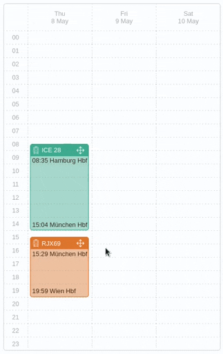

Wo soll deine Zugreise starten?
Berlin
Hamburg
Köln
München
Weitere Städte bald verfügbar
Ausprobieren!
Der Trans Europe Planner ist aktuell noch ein Prototyp. Details
Reiseplanung neu gedacht
Reise per Drag&Drop anpassen
The simpler way to plan your train trip across Europe

Blog: Warum denken wir Reiseplanung neu?